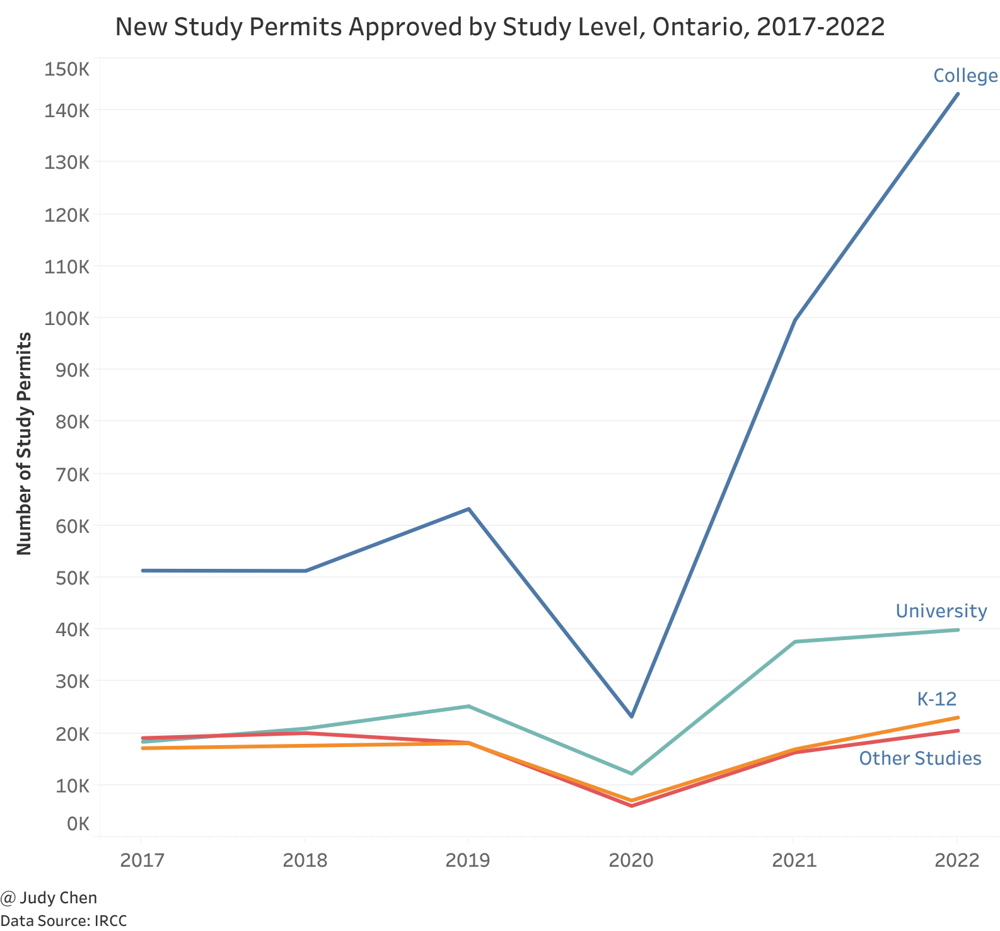

International Students in Canada#
Introduction#
International students play a crucial role in enhancing Canada’s educational and cultural landscape, contributing to excellence and innovation in Canadian institutions. This report, utilizing open data from IRCC and Statistics Canada, provides a comprehensive overview of international student trends in Canada in 2022, focusing on their countries of origin, province or territory of study, level of study, tuition fees and school selection.
In 2022, the number of Canadian study permit holders reached 807,260, marking a 27% increase from the previous high in 2019. This resurgence aligns with pre-pandemic trends, signalling a robust recovery.
Origin Countries of International Students#
Where do the Canadian international students come from?
A significant portion of international students in Canada hails from India, constituting nearly 40%, while Chinese students account for 12.4% of all Canadian student permit holders in 2022. Notably, the Philippines, France, and Nigeria rank 3 to 5 in order of representation.
Over the last decade, there has been a notable shift in the origin countries of international students. While China dominated the early 2010s, Indian students surpassed their Chinese counterparts in 2018, with over 319,000 Indian students holding a valid Canadian study permit in 2022, a 46% increase from 2019. The decline in Chinese student numbers aligns with a broader trend across East Asia, possibly influenced by pandemicrelated factors.
What does the international education ecosystem look like with India at the top? Chinese students have repeatedly emphasized institution ranking and reputation as key drivers when choosing where to study. For Indian students, graduate outcomes are paramount. Expect post-graduation work opportunities and career success metrics like graduate employment rate to become even more salient in the sector as Indian students dominate.
The Philippines emerged as Canada’s third-largest source market in 2022, experiencing a 112% increase from 2021. Ukraine and Hong Kong’s inclusion is attributed to new study permit pathways and targeted immigration measures implemented by Canada in 2022 and 2020, respectively.
Nepal has witnessed substantial growth, with a remarkable increase in student visa approvals despite a modest rise in applications. The pandemic spurred an enhancement in application quality, contributing to Nepal becoming one of Canada’s fastest-growing countries for international students.
Destination of International Students#
Where do the Canadian international students go?
1% of international students didn’t identify an intended destination.
Ontario remains the most popular province for international students, accounting for over half of all international students in 2022. British Columbia and Quebec follow, comprising 20.4% and 11.6%, respectively. It is notable that Ontario experienced the fastest growth rate (41%) from 2021 to 2022, outpacing the national average.
Study Level of International Students#
In 2022, over 651,000 international students pursued post-secondary education in Canada, marking a 31% growth from 2019. Post-secondary education constituted 81% of all valid study permits, a 3% increase since 2019. K-12 education rebounded in 2022, surpassing 2021 by 34% and 13% higher than 2019.
India dominates at both university and college levels, with the number of international students from India at the college level exceeding that from the Philippines by more than tenfold.
Notably, approvals for elementary school students surpassed those for secondary school students in 2022, signalling a shift in the international education market in Canada.

At the elementary level, Ukraine had the highest growth rate overall, with over 3,400 elementary student approvals. At the secondary level, The number of international students from China is much higher than the other countries. And the other two East Asia countries - South Korea and Japan, also ranked within the top five origin countries.
Finally, let’s check which study levels are the most highly pursued in Ontario and British Columbia respectively.

As shown in the above figure, college-level education was the fastest-growing study level in Ontario last year, with a 44% growth rate over 2021. For comparison, universitylevel eduction only experienced a much slower growth rate of just 6% over the previous year. University approvals accounted for only 18% of all approvals in Ontario in 2022, decline from 22%. This trend means that international students may be shifting their focus away from traditional university programs and exploring more cost-effective offering.
K-12 study permit approvals accounted for 10% of all approvals in Ontario in 2022, and experienced a 36% increase compared to the previous year. This was eight percentage points lower than the national average.
In British Columbia, post-secondary eduction at both the university level and the college level grew significantly, with a 43% increase in college approvals and 16% in university approvals in 2022. College studies was the only study level in BC to increase in market share of new approvals in 2022. As a historically university-driven market, BC approvals have shifted, with more international students approved to study at the college level in 2022 than in 2021.
K-12 approvals were up 10%, with 1,600 more study permit approvals in 2022 compared to 2021. Overall, K-12 students sat at a total of over 17,250 students in 2022, despite a strong national increase in K-12 approvals.
Tuition Fees and Housing Costs for International Students#
Tuition fees for international students at the K-12 level in Canada are different based on the types of schools. For example:
Public schools can range from
$9,500to$17,000per yearIndependent day schools can range from
$15,000to$30,000per yearIndependent boarding schools can range from
$63,000to$83,000per year
Tuition fees for post-secondary eduction vary depending on the program and school that the international student chooses.
College programs vary in length. Some programs may only take a few months or others a few years. Typically, tuition fees can range from approximately $7,000 to $22,000 per year. Many college programs also include a work placement or apprenticeship, so international students may earn an income while they study.
According to the data from Statistics Canada, on average in Canada, university tuition fees in the 2022/2023 school year are around:
$36,100per year for international undergraduate students$21,100per year for international graduate students
For Canadian international undergraduate students, tuition fees are highest in professional degree programs such as dentistry, medicine, optometry and veterinary medicine. For Canadian international graduate students, the executive MBA and regular MBA have the highest tuition fees, while the veterinary medicine and optometry have the lowest tuition fees, which is the opposite of undergraduate tuition fees.
Across Canada, international undergraduate students pay the highest tuition fees in Ontario, which is the only province with international undergraduate fees higher than the national average. British Columbia and Quebec are also home to some of the highest international undergraduate tuition fees. For international graduate students, the top three provinces with the highest graduate tuition fees are Ontario, British Columbia and Nova Scotia. In comparison, Newfoundland and Labrador is the least expensive province for international students pursuing both undergraduate and graduate studies.
Next to tuition fees, housing costs are a significant concern, with Vancouver and Toronto being the most expensive Canadian cities for rentals. The average rent for a onebedroom apartment in Vancouver and Toronto exceeded $1,500 per month.
As arguably the fastest growing city in the Prairies, Calgary is noticeably more expensive than its Prairies counterparts. And rent remained relatively the lowest in Atlantic Canada in 2022, with the exception of Halifax. The City of Trees was the only major Atlantic
CMA with an average rent above $1,000 per month for a one bedroom apartment.
Most Popular Universities and Colleges for International Students#
In 2022, over 356,000 students were approved for post-secondary study in Canada, with 62% at the college level, a 40% increase from the previous year. The top 10 Canadian colleges by study permits approved are all in Ontario, with Conestoga College leading in new international student enrolments. And Niagara College Toronto experienced a great growth rate up to 628% over 2021.
In comparison, within the top 10 Canadian universities by study permits approved in 2022, half universities are located in Ontario, in particular, three universities are from Vancouver and two universities are from Toronto. Among universities, University Canada West claimed the title of the most popular, experiencing a 93% increase in new international students compared to 2021.
Conclusion#
The international education landscape in Canada saw unprecedented growth in 2022. Noteworthy trends include the rising preference for college-level education, smaller universities gaining traction, and K-12 education experiencing significant growth, particularly at the elementary level. As Canada continues to attract more international students, the diverse factors driving this growth indicate a dynamic and evolving landscape in the years to come.
November 2023